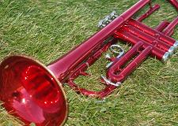

Where I've been the last few years
Geography
I am from a small town called Fruitland, ID. It is located about 50 miles northwest of Boise, ID, and shares borders with Payette, New Plymouth, and Parma, ID, along with Ontario, OR. Fruitland Has a population of roughly 5,000 people. While there is not much to do in town, within an hour's drive in any direction you can do just about any outdoor sport including hunting, fishing, skiing, snowboarding, white water rafting, water skiing, hiking, climbing, hang gliding, skydiving, etc...
Education
I still haven't decided exactly what I want to do for a career, but I know that it's going to involve computers. Ever since I was very young I have had a high interest in computers, and have always been good at fixing them. To this end I am attending the LDS Business College in Salt Lake City, UT, studying in the Information Technology Associates of Applied Science with a triple emphasis in Networking, Server, and Database Administration.
I graduated with honors from Fruitland High School in 2011.
Hobbies
I am a huge fan of webcomics and cartoons, and I enjoy reading articles about computers, and culture in general. Naturally, one of my favorite comics is Xkcd, a minimalistic stick-figure comic that features geek jokes. I can attribute a lot of my success in computers to Chris Hoffman, the head writer at howtogeek.com, from whom I learned windows inside and out, and also learned to dabble in GNU/linux.
I also enjoy watching anime and superhero movies. My favorite anime series are Deathnote, Trigun, and Hetalia Axis Powers. I enjoy anything by Studio Ghibli®, but my favorite anime movie is Howl's moving castle. For superhero movies, I have really liked the most recent reboots of The Man of Steel, The Dark Knight, and The Amazing Spider-Man, but I enjoy the cartoons even more. My favorite superhero movie is V for Vendetta.
Music

Trumpet
In middle school I learned to play my first musical instrument, the trumpet, which I continued to play in the FMS Symphonic Orchestra and the FHS Marching band for a combined total of 6 years. during this time i also learned to play sister instruments to the trumpet, such as the cornet and the bugle. I retired from playing trumpet after my sophomore year in high school, and took up playing the guitar.
Guitar
I only took one semester of Intro to Guitar in high school, so I didn't get very good at the guitar. I can play a few songs, but I cannot sight-read music. I have to learn new songs by memorizing tablature, an alternate method of writing music.
Organ
In senior year of high school, my parents received a console organ which was promptly stored in our garage. The organ was very old, dirty, and broken down, but most of the keys still worked. I bought a beginners music book and, using what I learned from reading trumpet sheet music, figures out how to read and play music for the organ. However, I still cannot sight-read. I use the sheet music to memorize the song.
Boy Scouts of America
I was always active in my ward's scouting program, and it was very rare for me to miss a camping or hiking trip, which we had at least once every four weeks. In middle school I served as Assistant Den Chief when my mom was called to be an Akela (mother wolf) over the wolf cubs, and I later certified to be a Den Chief when she was called to be an Akela for the bear cubs.
I earned my Eagle Scout award in December of 2008, during my sophomore year in high school. For my Eagle Scout Project, I Coordinated the planting of over 300 desert shrubs and grasses in front of Fruitland’s new Elementary School Building. I did this in the summer between my freshman and sophomore semesters.
After I earned my Eagle, I served as a troop leader, and went with the scouts to Camp Morrison, so that I could help my brother get his required Merit Badges, following which I helped participate in his eagle project, where he painted one third of all the fire hydrants in Fruitland, ID.
I then earned my Eagle Bronze Palm award in August of 2010, which is earned by completing more than the required amount of merit badges.